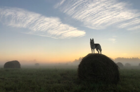
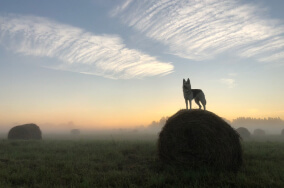

Путешествия по России
Настоящая страна не в выпусках новостей, а здесь.

ваша полка — верхняя
Чего мы там не видели?
По опросам ВЦИОМ, 95% россиян мечтают куда-нибудь поехать, но только
36% планируют провести отпуск в родной стране. Мол, чего мы тут, дома, не видели? На самом
деле, Россия — это целая вселенная с ласковым морем юга, густыми лесами Саян и суровыми
льдами плато Путорана. А ещё увидеть все эти красоты можно без миллионов на счету,
загранпаспорта и многочасовых перелетов. Как, например, Вера Башмакова — смелая молодая
мама, которая взяла в охапку троих детей, усадила их в свою «Ладу» и проехала 20 тысяч
километров по родной стране. Мы выбрали и описали некоторые интересные места, достойные
вашего отпуска.
Часовых поясов 11
Объектов природного наследия ЮНЕСКО 12
Объектов культурного наследия ЮНЕСКО 16
Природных заповедников 105
Аэропортов 241
Куршская коса

Здесь, посреди лесов и песчаных дюн, вы сможете увидеть два водных
горизонта — спокойного Куршского залива с одной стороны и подёрнутого рябью волн
Балтийского моря с другой. Уникальная природная зона на краю российского анклава.
На этом Калининградская область не заканчивается. Для путешественника
и исследователя там же по соседству — самая западная точка России, Балтийская коса, — и
немецкое наследие россыпи небольших приморских городов. Атмосфера здешних мест исключает
суету, окуная в спокойствие природы и запах стального, прохладного моря.
Кольский

Почти весь полуостров находится за Полярным кругом. Саамская тундра,
от которой на юг — тайга, а на север — Ледовитый океан, прикидывающийся Баренцевым
морем.
Возможно, вы смотрели Звягинцева и даже слышали историю арктического
фестиваля в Териберке. Возможно, слово «Хибины» не осталось под снегом школьных
воспоминаний об уроках географии. Возможно, вы не интересовались пронизывающей земную
кору сверхглубокой скважиной, а от апатитов вас давно накрывает апатия. Но ваша мечта
увидеть северное сияние начинает сбываться с билетом в Мурманск.
Алтай

Алтай — одно из красивейших мест в России. В первую очередь из-за
гор: если ехать вдоль хребта, вы увидите склоны, усыпанные соснами, горные реки и озёра.
А если вы откроете в автомобиле окна, сможете познакомиться с невидимым чудом здешних
мест — горным воздухом.
Климат на Алтае умеренный, поэтому ехать сюда лучше всего летом.
Так вы увидите всё разнообразие местной флоры и фауны. По лесам Алтая бродят лоси, над
хребтами летают орлы, а на равнинах пасутся косули. И знаменитые манулы — тоже обитатели
Алтайского края.
Зимний Байкал

Всем известен Байкал как крупнейшее озеро в мире. Многие также
знают, что это самый большой источник пресной воды и одно из красивейших мест в России.
Конечно, это всё так. Но Байкал ещё идеальное место для соревнований
по скийорингу. Это такой вид спорта, когда лыжник привязывает себя к мотоциклу, и
тандем старается развить как можно бóльшую скорость на льду. В марте 2019 года на
фестивале «Байкальская миля» был поставлен мировой рекорд — 197.011 км/ч.
Карелия

Сибирь заканчивается не на Урале, а в Карелии: образующая тайгу
сибирская лиственница не растёт западнее Водлозера. Зато здесь она вымахивает на 30
метров — леса карельских национальных парков из-за непроходимых болот никогда не знали
топора. Некоторым соснам уже больше чем полтысячелетия. Прикоснитесь к живому существу,
видевшему солнце раньше, чем увидал его Иван Грозный. В девственном лесу на сотню
километров не встретишь тропы. А на редких тропинках деревья в паре метров от земли
помечены медвежьими когтями. Чтобы все знали, кто тут хозяин.

 



Фотографы, снимающие Россию
Природа и люди вдохновили их работы, удостоенные наград на международных конкурсах